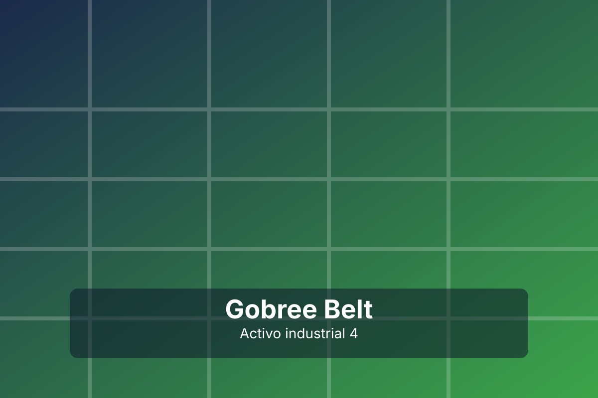

Mantenimiento preventivo
Cómo aumentar la vida útil de su banda transportadora con inspecciones periódicas.
Leer másContenido técnico para mejorar la eficiencia y continuidad de su operación.
Cómo aumentar la vida útil de su banda transportadora con inspecciones periódicas.
Leer más
Estrategias para reducir tiempos muertos y aumentar productividad en líneas continuas.
Leer más
Nuevos materiales y configuraciones para ambientes de alto desempeño.
Leer más